Nosso Cardápio
Ingredientes frescos e pães artesanais
Espresso Pátio
Grãos selecionados moídos na hora, com crema intensa e sabor marcante.
R$ 8,00
Cappuccino Cremoso
O clássico perfeito. Espresso, leite vaporizado e uma espuma de leite densa e aveludada.
R$ 14,00Avocado Coffee
(Nosso "Signature") Espresso, leite vaporizado e um toque suave de creme de abacate e mel. Surpreendente.
R$ 18,00
Latte Caramelo Salgado
Leite vaporizado, espresso e um toque de caramelo salgado artesanal.
R$ 16,00Suco Verde Oásis
Prensado a frio. Couve, abacaxi, hortelã, gengibre e maçã verde.
R$ 15,00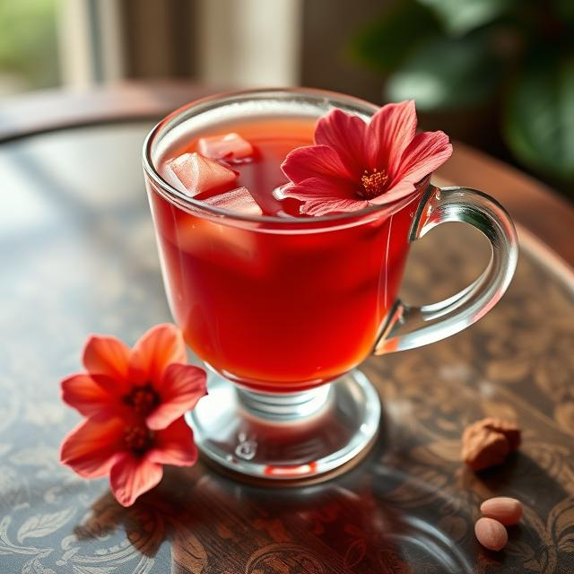
Chá Gelado da Casa
Infusão refrescante de chá de hibisco, servido com laranja Bahia e um ramo de alecrim.
R$ 14,00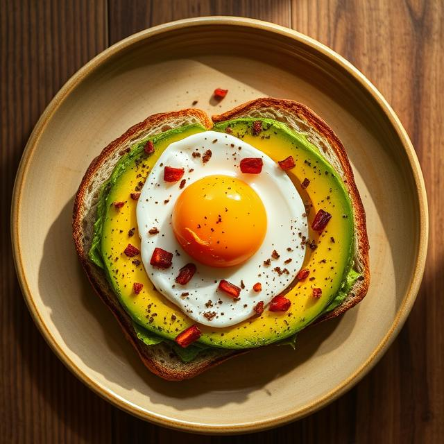
Avocado Toast
A estrela do brunch. Duas fatias do nosso pão de fermentação natural, creme de abacate, ovo perfeito (poché) e sementes de gergelim negro.
R$ 28,00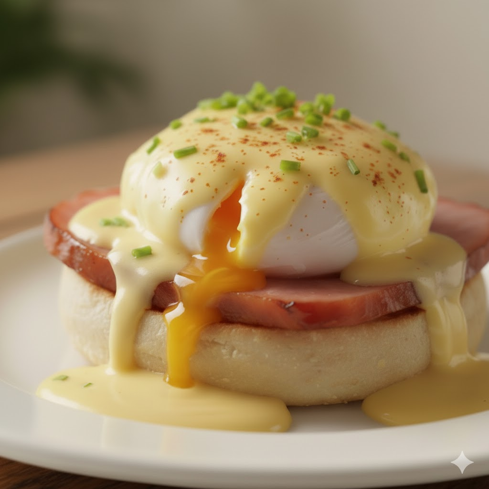
Ovos Beneditinos
Pão brioche artesanal, ovos poché, presunto royale e o clássico molho holandês feito na hora.
R$ 32,00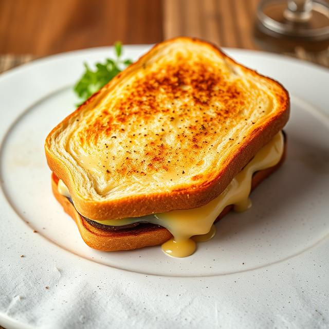
Croque Monsieur
O clássico francês no nosso pão brioche, com presunto, queijo gruyère e molho béchamel, gratinado na hora.
R$ 30,00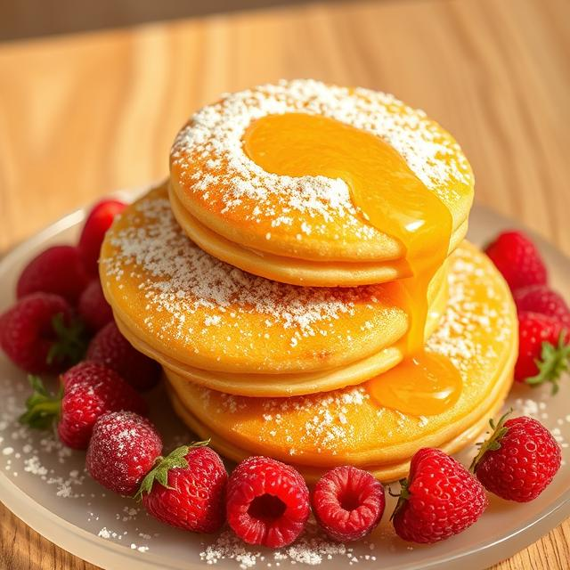
Panquecas do Pátio
Três panquecas fofas, servidas com frutas vermelhas frescas, nozes e mel orgânico.
R$ 26,00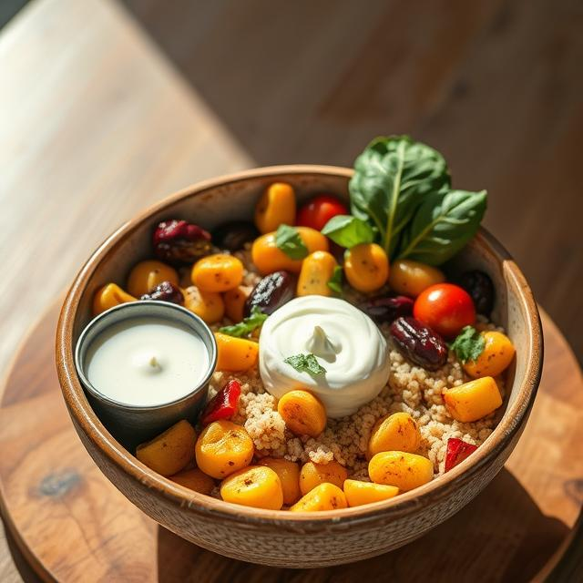
Bowl de Cuscuz Marroquino
(Opção leve) Cuscuz com legumes grelhados (abobrinha, berinjela), grão de bico crocante, tâmaras e molho de iogurte com hortelã.
R$ 29,00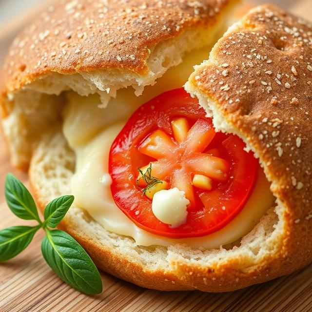
Sanduíche de Pão de Queijo
Pão de queijo da casa recheado com queijo canastra curado e uma fatia de tomate fresco.
R$ 18,00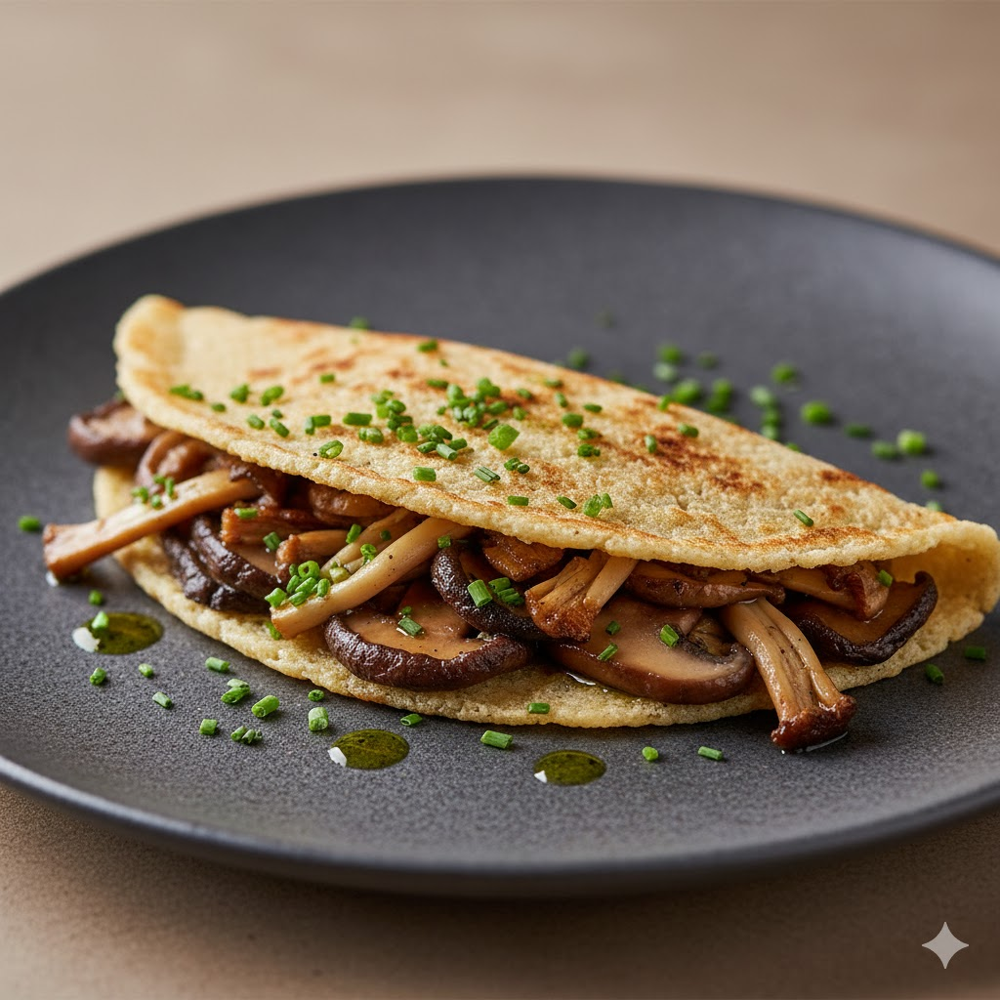
Tapioca de Cogumelos
(Opção Vegana) Goma de tapioca crocante recheada com um mix de cogumelos frescos salteados no shoyu e azeite de trufas.
R$ 27,00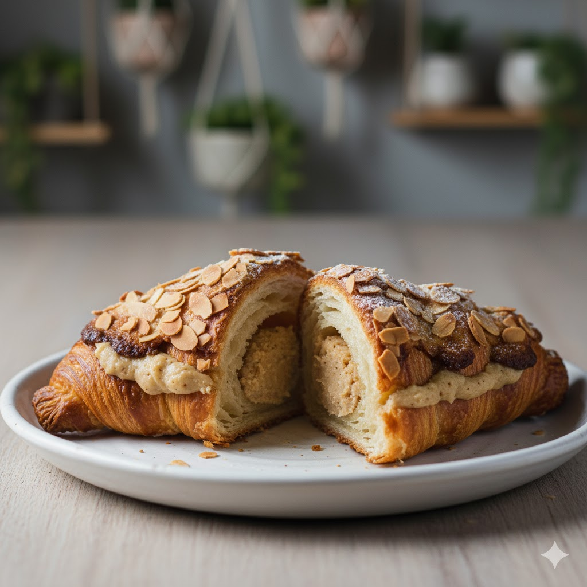
Croissant de Amêndoas
Nosso croissant artesanal recheado com creme frangipane de amêndoas e coberto com lâminas tostadas.
R$ 18,00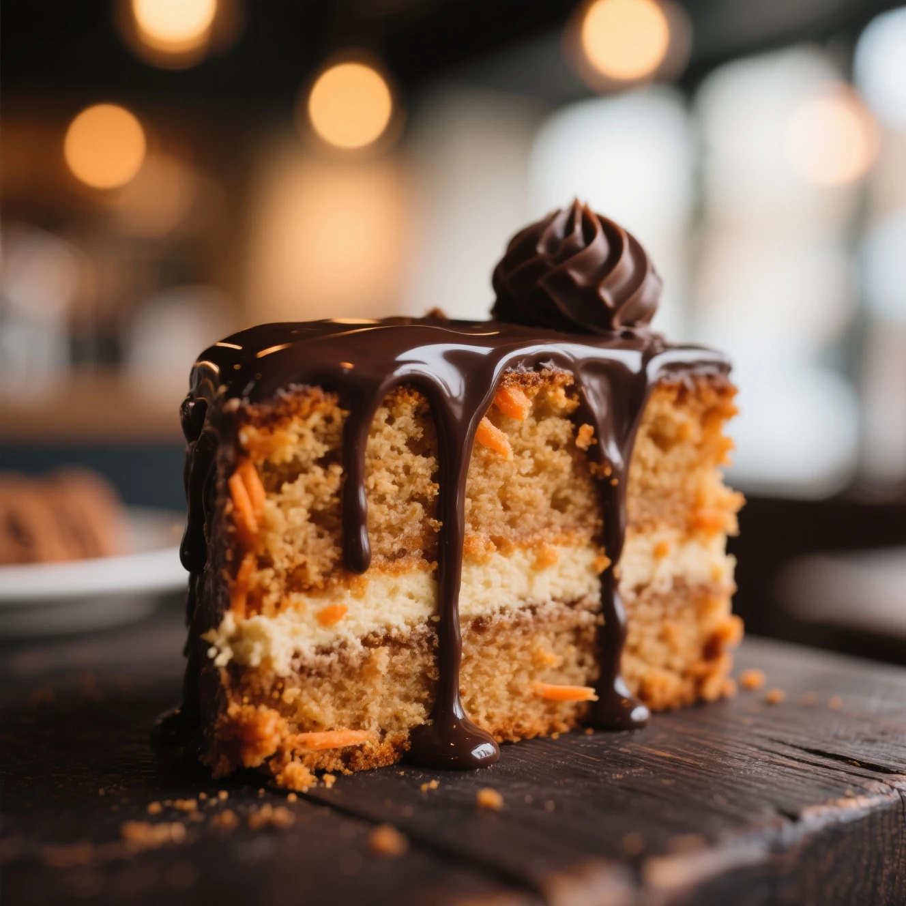
Bolo de Cenoura (Estilo Pátio)
Massa fofíssima com especiarias e uma cobertura generosa de brigadeiro cremoso de capim-santo.
R$ 16,00 (A fatia)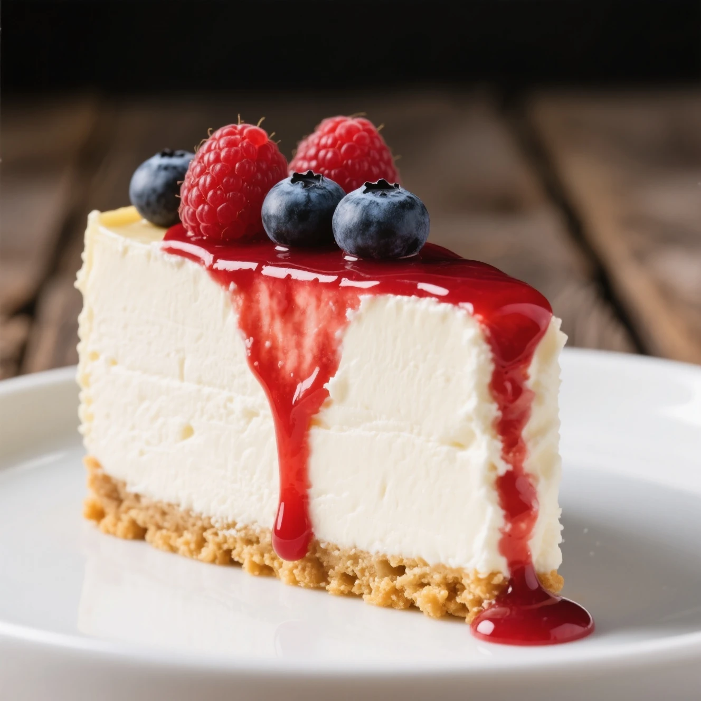
Cheesecake de Frutas Vermelhas
Base crocante de biscoito, recheio de cream cheese suave e calda de frutas vermelhas artesanal.
R$ 20,00 (A fatia)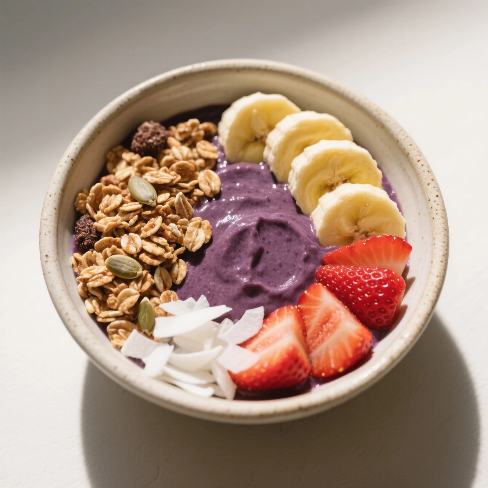
Tigela de Açaí
Açaí puro (sem xarope), granola da casa com sementes, banana, morangos e lascas de coco.
R$ 25,00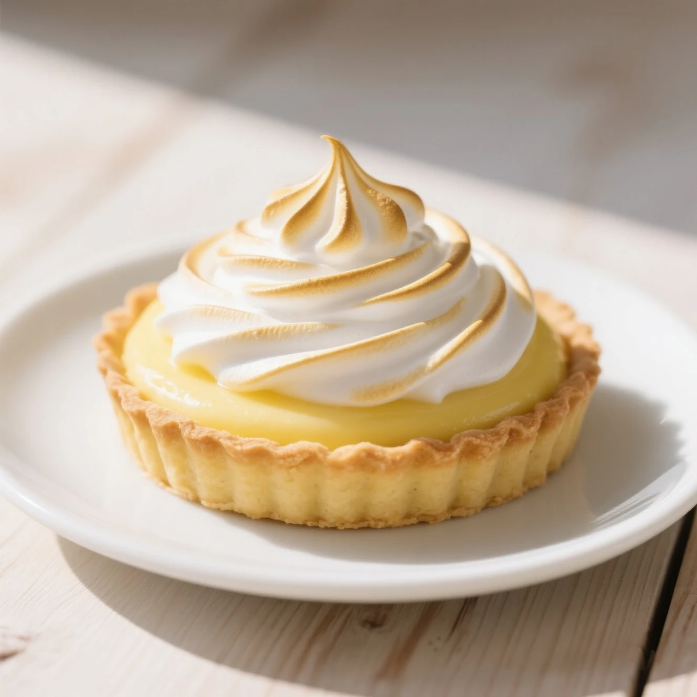
Tartelete de Limão Siciliano
Massa sablée crocante com recheio de creme de limão siciliano e cobertura de merengue suíço tostado.
R$ 17,00
Brownie do Pátio
Brownie de chocolate 70% cacau, levemente úmido, servido com uma bola de sorvete de baunilha.
R$ 22,00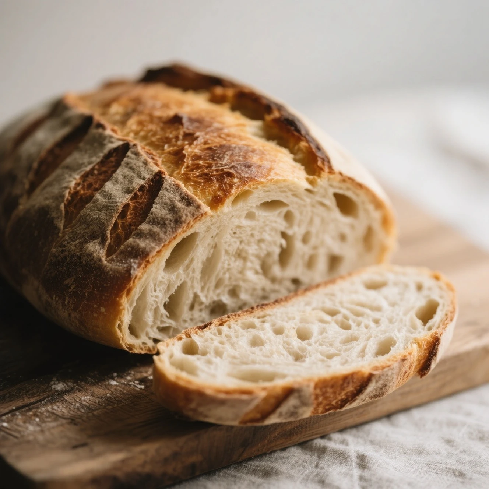
Pão de Fermentação Natural
(Para levar) Nosso pão artesanal feito com fermento natural (levain). Crocante por fora, macio por dentro.
R$ 25,00 (A unidade)